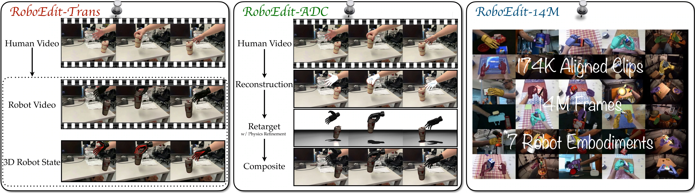
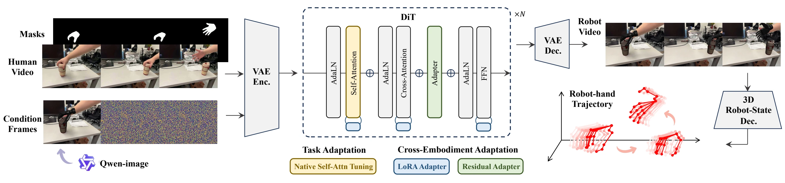
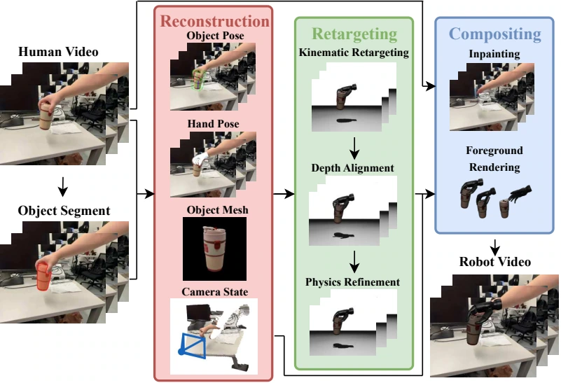

Curate
RoboEdit-ADC
Reconstruct and retarget human interactions to automatically produce aligned human/robot training pairs.
arXiv 2026
1University of California, Los Angeles 2Massachusetts Institute of Technology 3University of Utah

Collecting robot hand-object interaction data is costly and embodiment-specific, yet abundant human-object videos remain unusable for robot training. We present RoboEdit, a human-to-robot video editing suite that transforms human manipulation videos into action-consistent, physically plausible robot videos with aligned 3D hand states. To enable scalable supervision, we introduce RoboEdit-ADC, an automatic pipeline that reconstructs and retargets 3D interactions from RGB videos across embodiments. This pipeline generates RoboEdit-14M, a large-scale dataset of 174K aligned video pairs (14M frames) spanning seven robot embodiments, diverse scenes, and interaction types. The core editing engine, RoboEdit-Trans, employs cross-embodiment adaptation modules to preserve temporal coherence while adapting appearance and motion. It further integrates a 3D Robot-State Decoder to recover per-frame hand states for structured motion supervision. Experiments show that RoboEdit achieves state-of-the-art editing quality and supports downstream robot control policies in real-world manipulation tasks. Ultimately, the RoboEdit suite unlocks the vast potential of unlabeled human videos, providing scalable, high-fidelity visual and 3D motion supervision for generalizable robot learning.
Automatic curation supplies aligned data, cross-embodiment editing generates robot videos, and state decoding recovers the motion needed for control.
Curate
Reconstruct and retarget human interactions to automatically produce aligned human/robot training pairs.
Scale
174K paired clips and more than 14.1M frames cover seven distinct robot embodiments.
Translate + decode
Edit a human video into a robot interaction and recover its camera-space 3D hand trajectory.
Task adaptation learns human-to-robot editing; LoRA and residual adapters specialize the shared editor across robot embodiments.

We first fine-tune the shared editor on paired human/robot clips to learn a common human-to-robot transformation. This stage preserves the source scene, camera motion, and object dynamics while replacing the human embodiment.
We apply low-rank updates to the editor's spatiotemporal layers, adapting robot appearance and motion with few trainable parameters while retaining the shared editing capability.
We introduce residual bottleneck adapters for embodiment-specific refinement. They improve hand geometry, articulation, and contact-rich interaction patterns, complementing the broader adaptation learned by LoRA.
We design a 3D Robot-State Decoder to recover camera-space robot motion directly from edited RGB videos. It combines framewise spatial estimation with full-sequence temporal refinement to produce consistent wrist, finger, and joint trajectories across robot embodiments. The decoded states provide structured motion guidance for downstream robot learning and control.
RoboEdit-ADC reconstructs the 3D hand-object interaction and camera from an RGB video, retargets the motion to a target robot, and applies depth alignment and physics-guided refinement to reduce penetration, floating contacts, and motion artifacts before rendering and compositing the robot interaction.

24,197 source interactions become 174,547 aligned human/robot video pairs with more than 14.1M frames, spanning diverse scenes, cameras, objects, tools, and interaction types.
| Method | Params | Condition | Reconstruction | Local Editing | VBench | OpenVE | ||||
|---|---|---|---|---|---|---|---|---|---|---|
| SSIM ↑ | LPIPS ↓ | Edit LPIPS ↓ | BG SSIM ↑ | AQ ↑ | DD ↑ | MS ↑ | Overall ↑ | |||
| VACE | 1.3B | Single reference | 0.8764 | 0.1070 | 0.0497 | 0.9487 | 0.4673 | 0.4867 | 0.9952 | 3.2270 |
| UniVideo | 14B | Single reference | 0.3249 | 0.6515 | 0.1043 | 0.4026 | 0.3871 | 0.4133 | 0.9890 | 2.2455 |
| VINO | 13B | Single reference | 0.5564 | 0.3348 | 0.0679 | 0.6041 | 0.4488 | 0.4433 | 0.9967 | 3.2711 |
| Kiwi-Edit | 5B | Single reference | 0.7415 | 0.2059 | 0.0627 | 0.8137 | 0.4307 | 0.4600 | 0.9950 | 3.2386 |
| OmniWeaving | 13B | Single reference | 0.8107 | 0.1590 | 0.0625 | 0.8855 | 0.4478 | 0.6900 | 0.9955 | 3.1634 |
| EditCtrl | 1.3B | Text instruction | 0.5452 | 0.4295 | 0.0809 | 0.6154 | 0.4319 | 0.4933 | 0.9951 | 3.0319 |
| AnyV2V | 1.3B | Single reference | 0.5060 | 0.4837 | 0.0978 | 0.5753 | 0.3891 | 0.1567 | 0.9756 | 2.9023 |
| ReCo | 1.3B | Single reference | 0.8433 | 0.1366 | 0.0546 | 0.8869 | 0.4827 | 0.4967 | 0.9939 | 3.1255 |
| VACE | 1.3B | Multi-keyframe | 0.8996 | 0.0778 | 0.0258 | 0.9419 | 0.4768 | 0.5667 | 0.9923 | 3.1446 |
| UniVideo | 14B | Multi-keyframe | 0.3364 | 0.6464 | 0.1032 | 0.4125 | 0.3836 | 0.4233 | 0.9900 | 2.2089 |
| VINO | 13B | Multi-keyframe | 0.5539 | 0.3380 | 0.0541 | 0.5897 | 0.4396 | 0.2733 | 0.9944 | 3.1447 |
| RoboEdit-Trans | 1.3B | Multi-keyframe | 0.9282 | 0.0470 | 0.0171 | 0.9188 | 0.4832 | 0.6300 | 0.9956 | 3.2511 |
Please cite the arXiv preprint if you find this work useful.
@misc{guo2026roboeditturninghumanmanipulation,
title={RoboEdit: Turning Human Manipulation Videos into Scalable Robot Experience},
author={Yaowei Guo and Zeng Tao and Yuxin Jiang and Yunuo Chen and Zhiyang Dou and
Yuxiang Ma and Yin Yang and Demetri Terzopoulos and Ying Jiang and Chenfanfu Jiang},
year={2026},
eprint={2608.18948},
archivePrefix={arXiv},
primaryClass={cs.RO},
url={https://arxiv.org/abs/2608.18948},
}